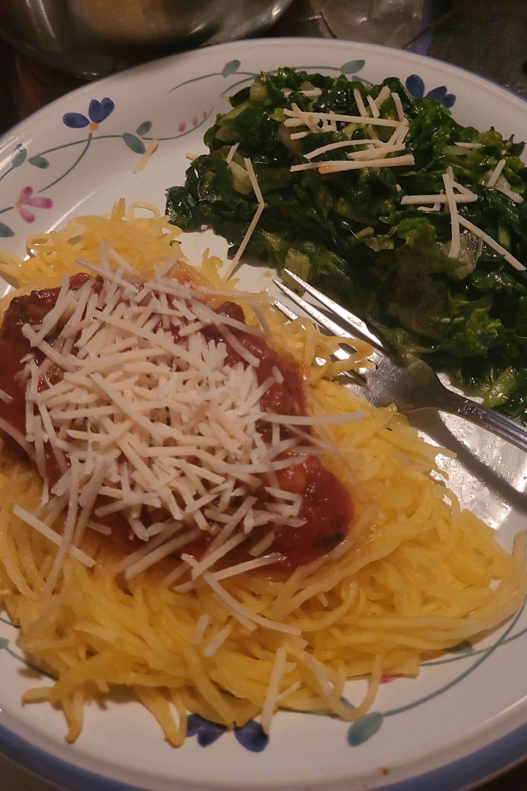

Vodka Sauce Spaghetti Squash

Ingredients
- 1 - Spaghetti Squash
- Salt, To Taste
- Black Pepper, To Taste
- 3 T - Oil
- 1 - Medium Yellow Onion, Chopped
- 3 - Garlic Cloves
- 3 1/2 cups - Tomato Paste
- 1/3 cup - Vodka
- 1/4 cup - Basil, Fresh Chopped
- 3/4 cup - Half and Half
- Parmesan, To Taste
Steps
- Cook the Spaghetti Squash
- Cut in half and scoop out the seeds
- Drizzle oil on the cut side and sprinkle with salt and pepper
- Place the halves face down on a baking sheet and bake for 40 minutes on 350° F
- Remove from oven and allow it to cool slghtly
- Prepare the Spaghetti sauce
- In a sauce pan over medium heat, saute the the onion and garlic in the oil
- Cook until soft
- Add tomatoe paste, vodka, salt, and black pepper and reduce heat to let simmer for about
10 minutes, stirring occasionally
- Add basil and stir in half and half
- Continue to cook until warmed through
- With a fork, scrape the inside of the spaghetti squash halves to get the veggie noodles
- Dish out the veggie noodles, add the desired amount of sauce, top with parmesan, and serve
Notes